Sinus tach vs SVT · answering, or looping?
25 key frames rendered from the same SVG graphics the After Effects build will use: your chambers heart with the conduction system drawn on top, ECG strips generated on a fixed time grid, and the re-entry loops on a push-in of the AV junction. Timecodes are where each line of take B lands, with a 1.5 s lead before the first word.
Cold open
One strip, one question. Nothing tells the viewer which rhythm this is yet.
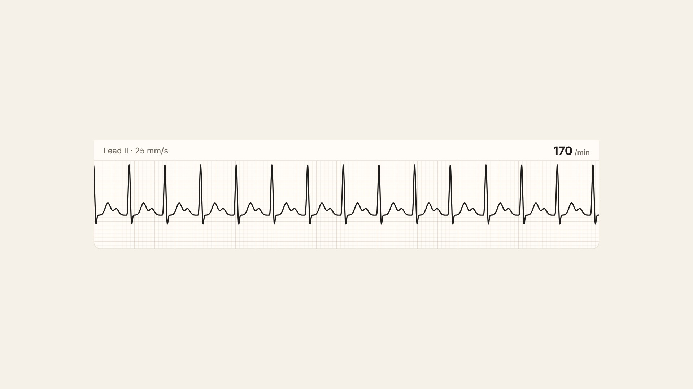
Narrow complexes, perfectly regular, a rate of one seventy.
One strip prints and scrolls on a warm-white field. Nothing else on screen yet. The rate readout sits in the strip header, the way a monitor shows it.
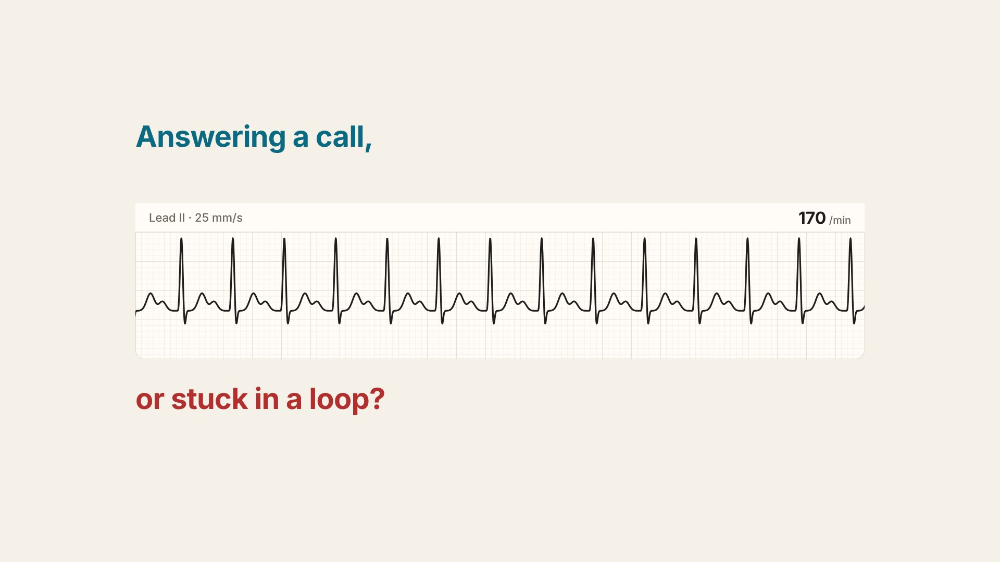
Is this heart answering a call, or is it stuck in a loop?
The two halves of the question land above and below the strip as the voice says them. Teal and coral are introduced here and stay with "answering" and "looping" for the whole video.
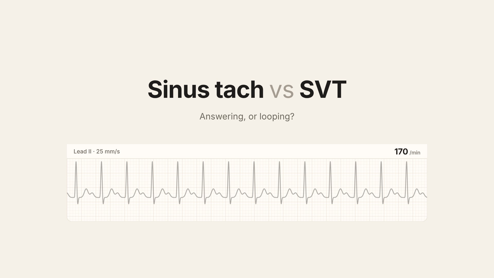
(no narration, 0.6 s)
The question collapses into the title. The strip keeps scrolling underneath, dimmed, so the cut into the heart feels continuous.
The normal route
The conduction system on your chambers heart. This is the reference everything else builds on.
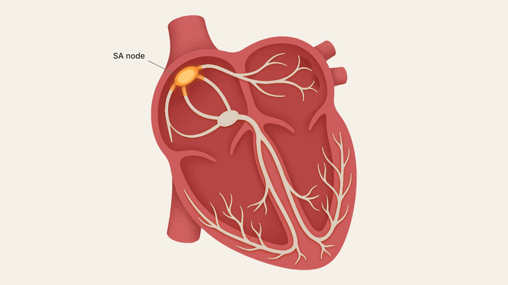
It starts in the SA node, high in the right atrium,
Your conduction-system heart, full frame. The conduction system starts as a muted track and the SA node lights amber on the word. Labels use leader lines, outside the anatomy.
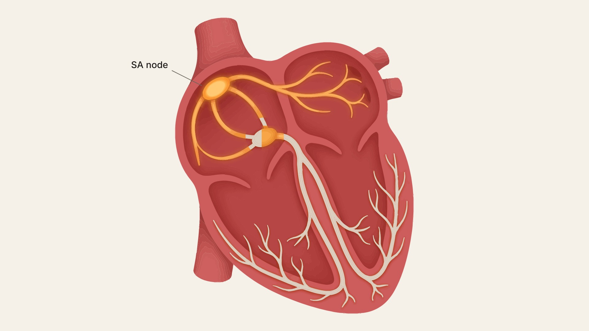
and spreads across both atria.
The atrial tracts light up from the SA node toward the AV node and across to the left atrium. In AE this is a trim-path wipe along the tracts.
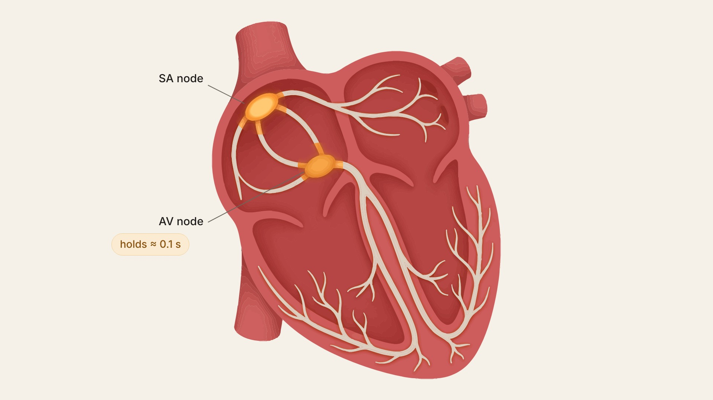
Then it reaches the AV node, which holds the signal for about a tenth of a second so the atria can finish emptying.
The AV node lights and a chip shows the hold. The atrial arcs fade behind it. In motion the pulse visibly pauses here before it drops into the septum.
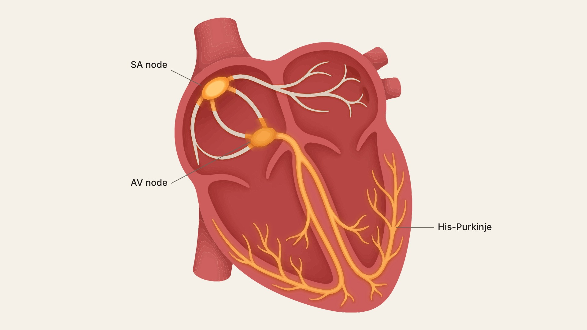
From there, it races down the His-Purkinje system into the ventricles.
The bundle of His, both bundle branches and the Purkinje fans light in quick sequence down the septum and into both ventricles.
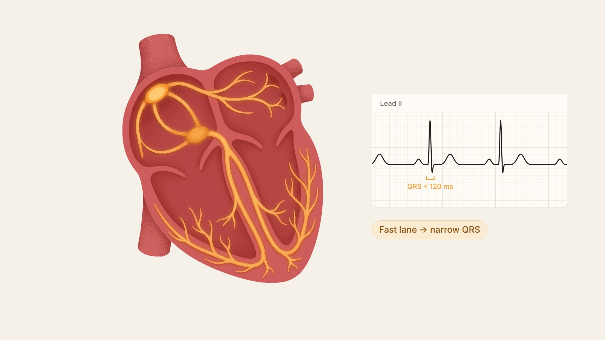
That fast lane is why the QRS is narrow.
The heart slides left and a single beat prints on the right. A bracket measures the QRS. The chip ties the fast lane to the narrow complex.
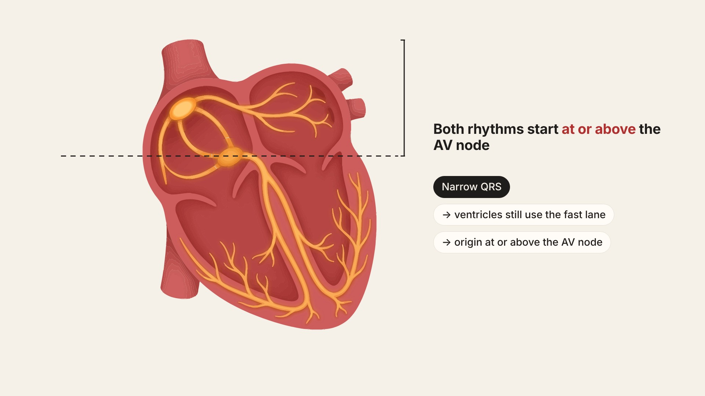
A narrow complex tachycardia tells you the ventricles are still using it, so the problem starts at or above the AV node. Both rhythms in this video start up here.
A dashed line crosses the heart at the level of the AV node. Everything above it is bracketed: this is where both rhythms in the video begin.
Sinus tachycardia: the heart answering
Same route, faster, for a reason.
In sinus tachycardia, nothing about the route changes. The SA node is just firing faster than one hundred because the body is asking for more output.
Section title in teal. The same route, fully lit, with the SA node pulsing faster. The rate chip climbs past 100.
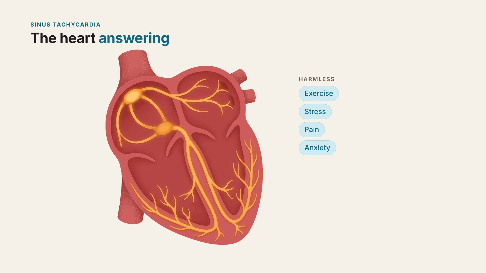
Sometimes the reason is harmless, like exercise, stress, pain, or anxiety.
The reasons arrive as chips, one per word, in teal.
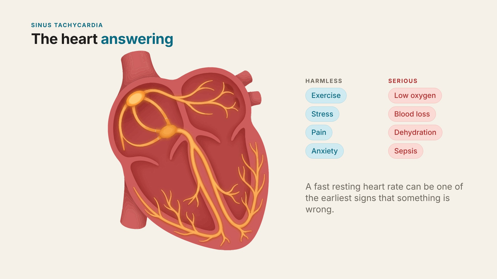
Sometimes it's serious, like low oxygen, blood loss, dehydration, or sepsis. A fast resting heart rate can be one of the earliest signs that something is wrong.
A second column in coral for the serious causes, and the warning line lands under them.
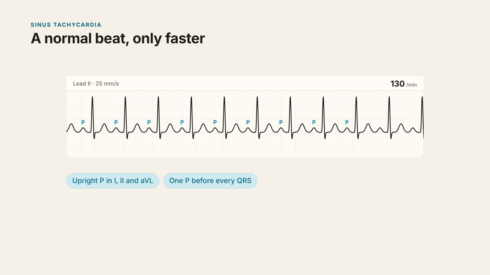
On the ECG, it looks like a normal beat, only faster. An upright P wave in leads one, two, and AVL in front of every QRS.
A sinus strip at 130 with every P wave marked as the voice names it. Two chips carry the rule.
SVT: the heart in a loop
Re-entry on a push-in of the AV junction. AVNRT and AVRT are shown as two loops, no deeper than that.
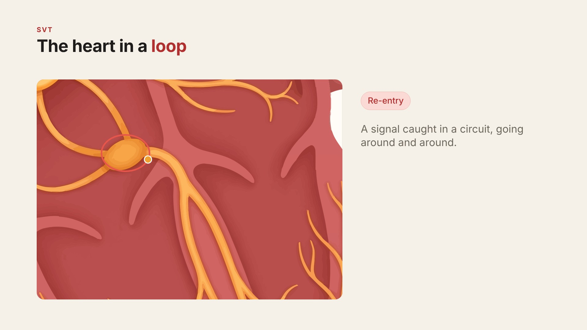
Most SVT works differently. It's re-entry, a signal caught in a circuit going around and around.
Section title in coral. We push in on the AV junction of the same heart. A coral circuit appears and the amber pulse laps it.
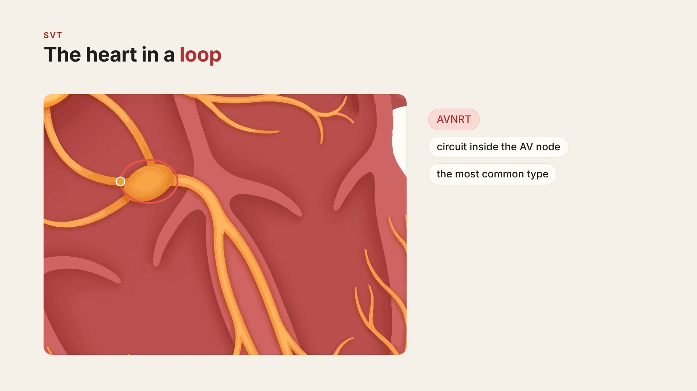
In the most common type, AVNRT, the circuit sits inside the AV node itself.
The AVNRT loop is labelled. Kept simple on purpose: a circuit inside the node, no slow/fast pathway detail.
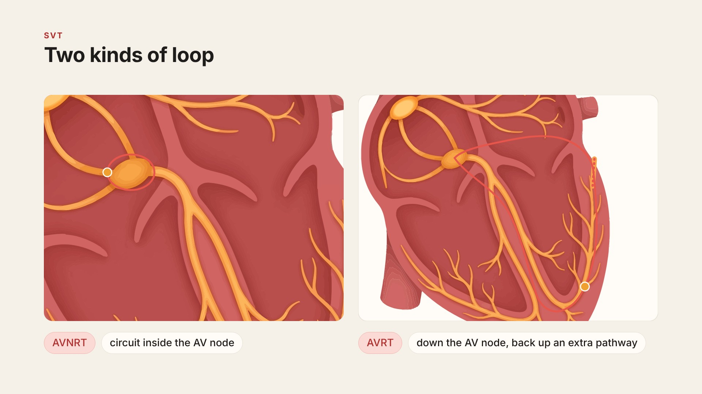
In AVRT, the heart has an extra pathway between the atria and the ventricles. The signal goes down through the AV node and back up the extra pathway.
The second card pulls out to the whole left heart: the circuit runs down the AV node and bundle to the apex, climbs the lateral wall, crosses back through the accessory pathway (amber band at the groove, like the reference) into the left atrium, and returns to the AV node.
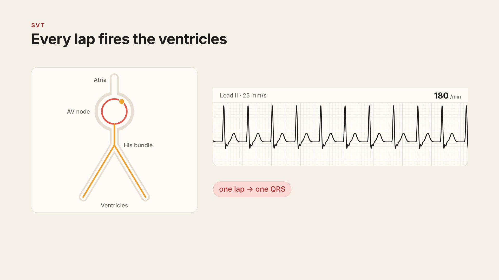
Every lap fires the ventricles.
The loop and a strip run together. Each lap of the pulse drops a QRS on the strip (amber dots mark the laps).
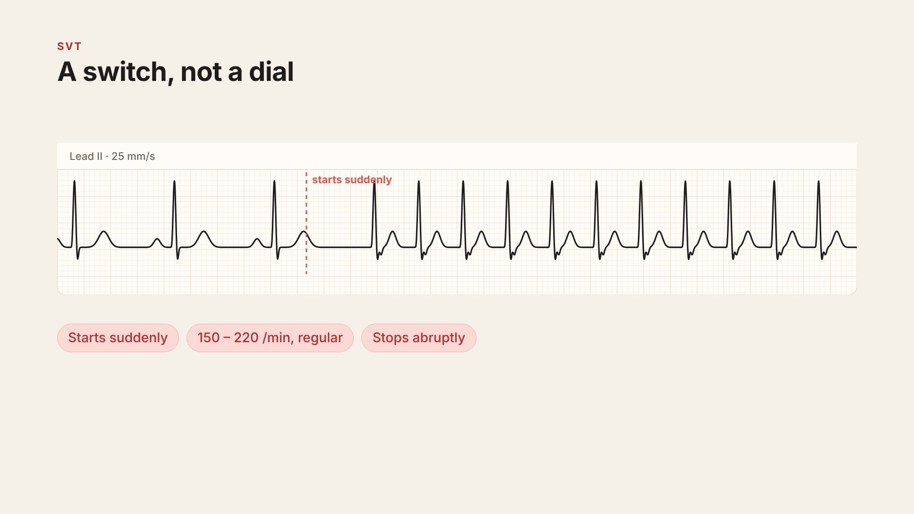
And because the loop isn't following the body's needs, it starts suddenly, runs fast and regular, usually between one fifty and two twenty, and stops just as abruptly.
One long strip: sinus at 80, then the loop switches on at 180 in a single beat, then off again. The onset and offset are ticked.
Side by side
The mechanism predicts what you see.
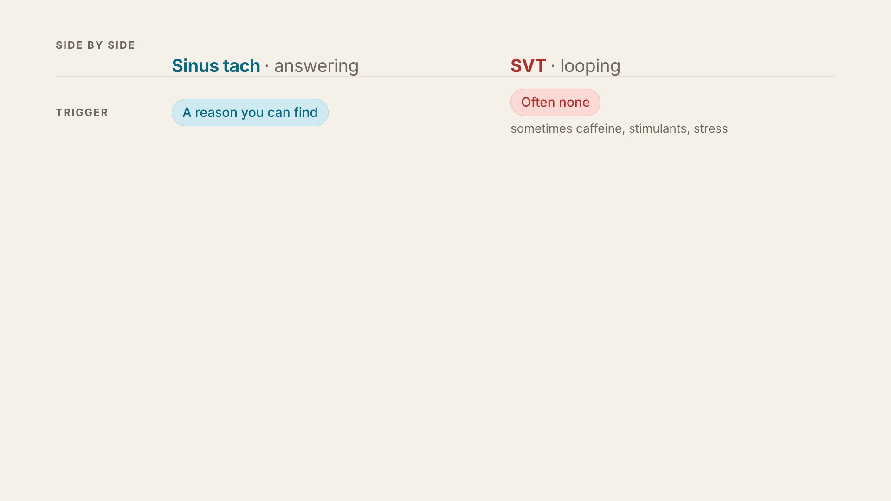
So put them side by side. Sinus tach has a reason you can find, and it follows that reason.
A two-column comparison builds row by row. Teal column for sinus tach, coral for SVT.
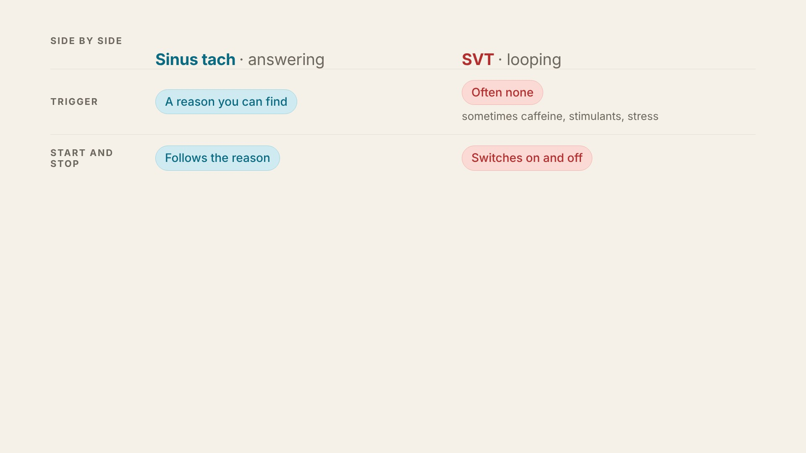
SVT often starts out of nowhere, sometimes after caffeine, stimulants, or stress, and it switches on and off.
Second row lands.
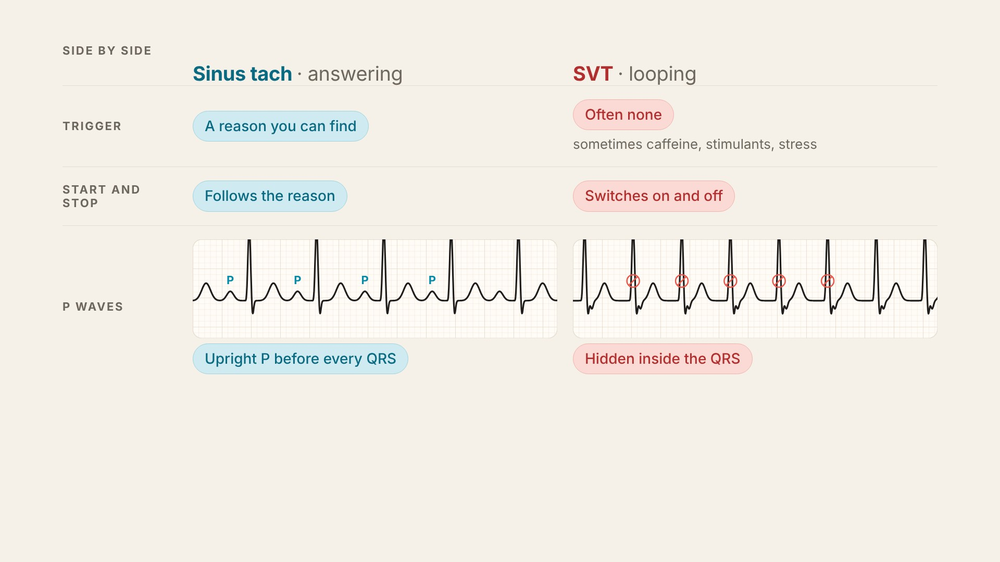
And in AVNRT, you often can't find a P wave at all. It's hidden inside the QRS.
Third row: two short strips at the same rate. P waves marked on the sinus side; on the AVNRT side the P is gone, hidden in the QRS.
The AV node is the key
Why vagal maneuvers and adenosine work, and why sinus tach needs its cause treated instead.
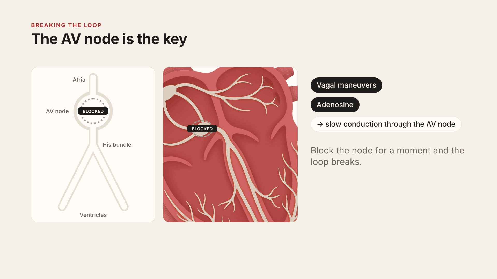
That loop is also how we stop it. Vagal maneuvers and adenosine both slow conduction through the AV node. If the circuit runs through the node, blocking it for a moment breaks the loop.
The circuit as a simple schematic (atria, AV node, His, ventricles) beside the zoomed heart. A block lands on the AV node; the loop goes grey and the pulse disappears.
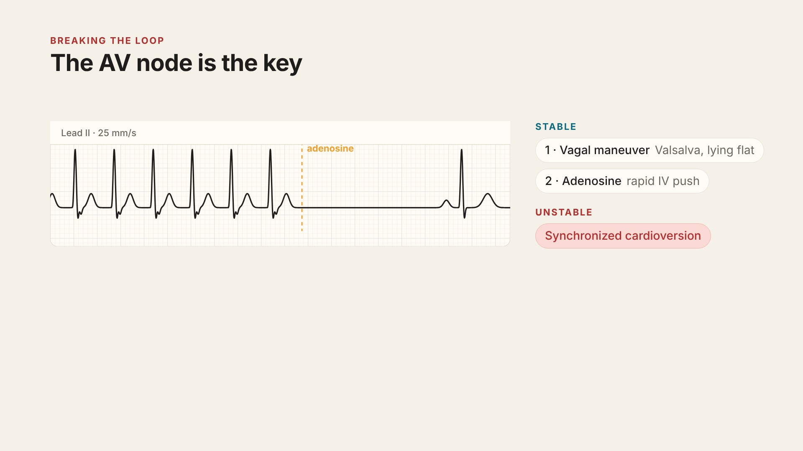
For a stable patient, start with a vagal maneuver like Valsalva lying flat, then adenosine by rapid IV push. An unstable patient gets synchronized cardioversion.
The strip converts: SVT at 180, a short pause after adenosine, then sinus rhythm. Steps are listed beside it; unstable gets its own line.
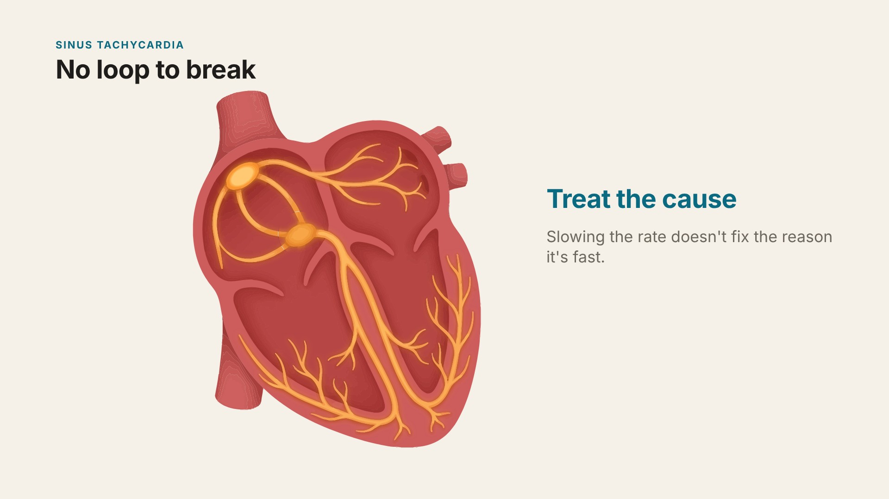
Sinus tach has no loop to break. Slowing the rate doesn't fix the reason it's fast. Treat the cause.
Back to the whole heart with the normal route lit in teal territory. No loop anywhere. The takeaway is the only text.
Close
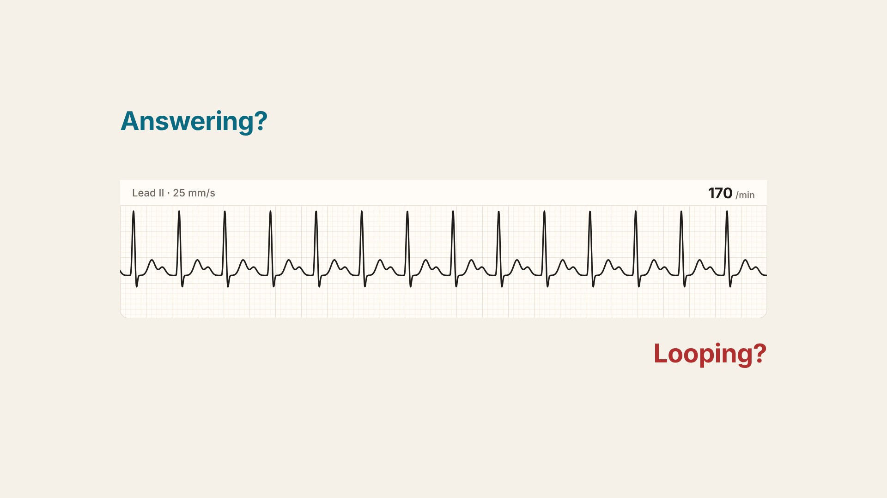
So when you see a fast, narrow, regular rhythm, ask one question: Is the heart answering or is it looping?
The opening strip returns, and the two words resolve either side of the question.